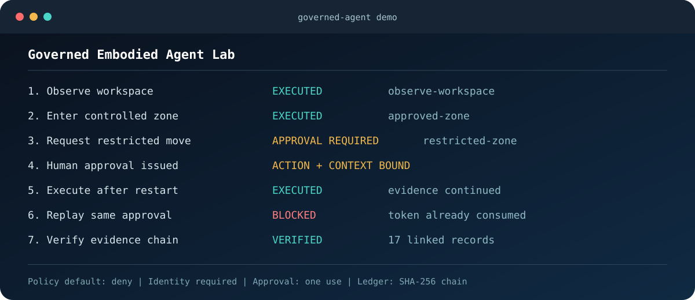

Reference lab
Governed Embodied Agent Lab
A runnable reference environment for policy-gated robot actions. It demonstrates trusted context, fail-closed decisions, action-bound approval, restart continuity, one-time approval use, and a tamper-evident evidence chain.
- Python reference implementation with governance regression tests
- Architecture and demo visuals ready for technical reviewers
- Roadmap toward telemetry, fault injection, ROS 2, and MuJoCo
